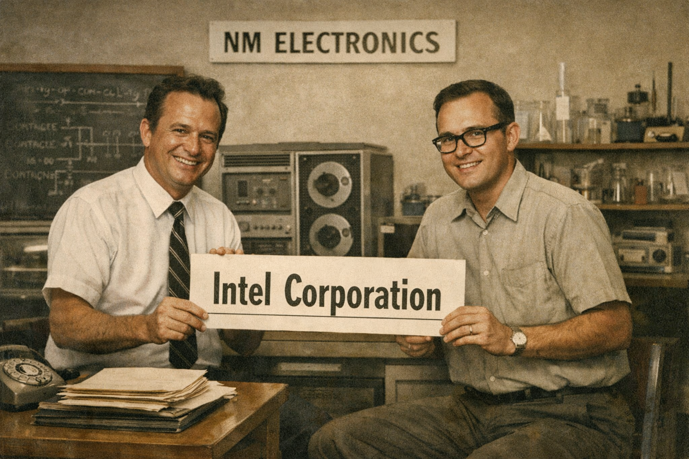
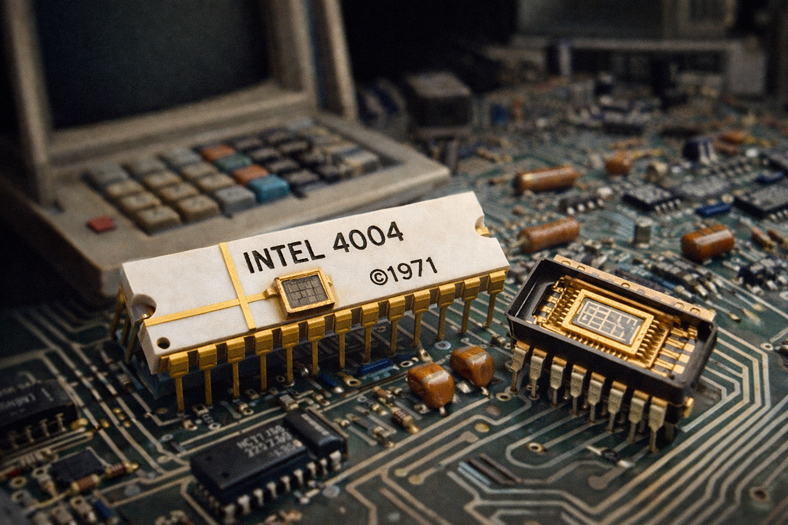
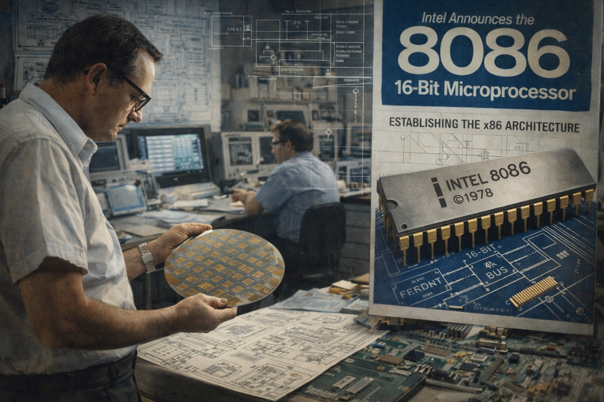
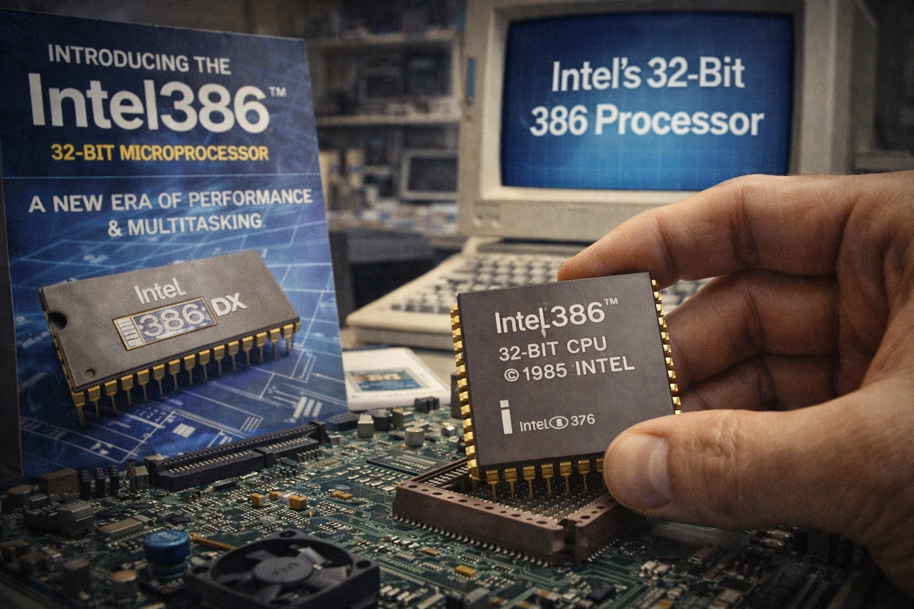
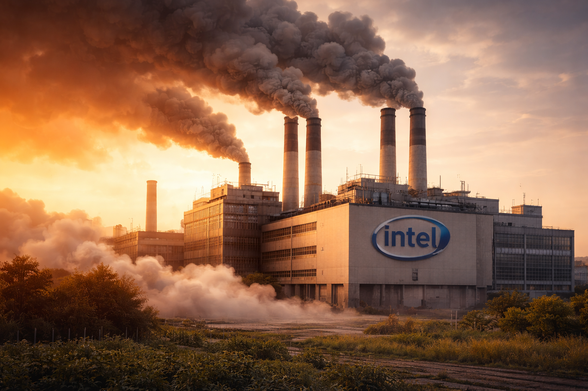
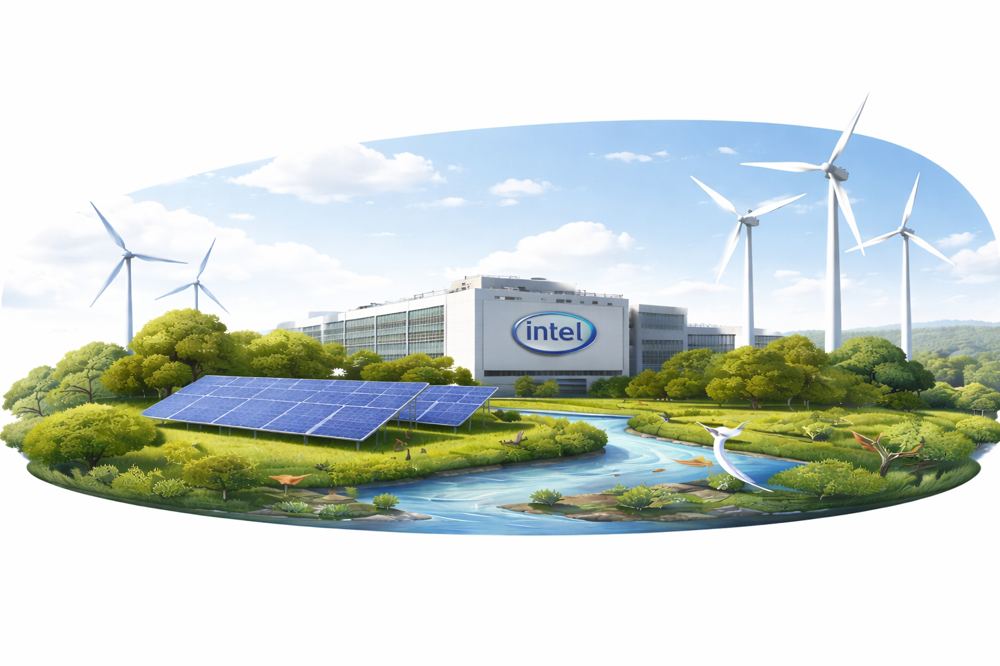
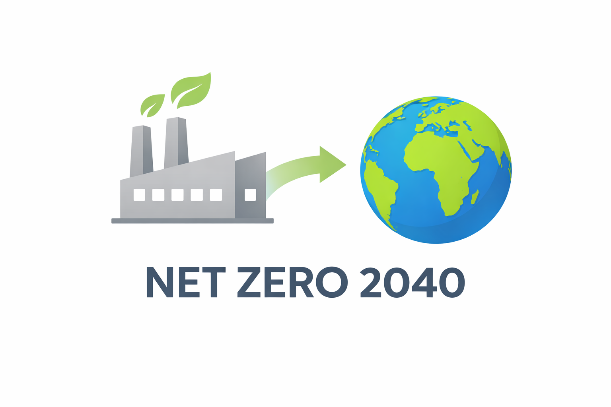
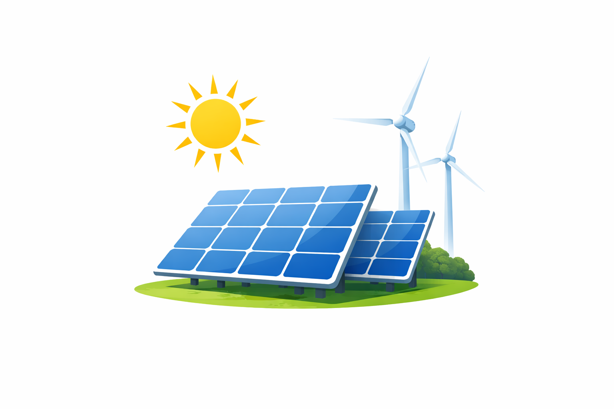
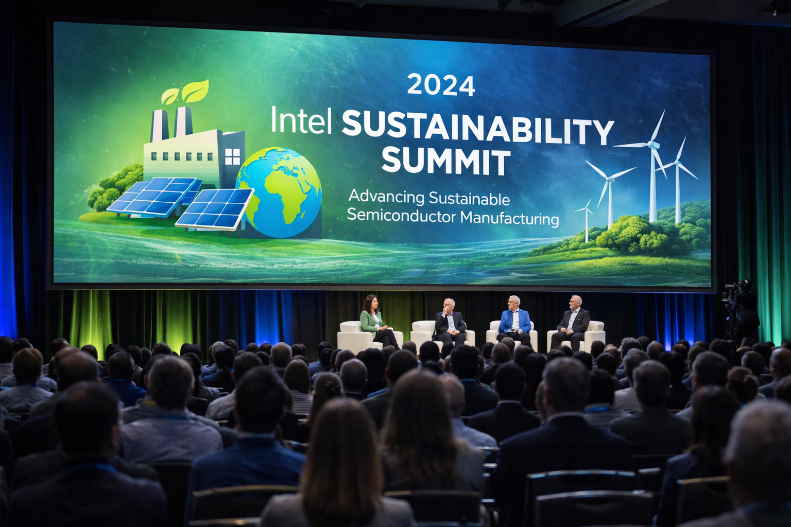

Sustainability Through the Ages
Explore Intel's journey through time, discovering how our commitment to innovation has shaped a more sustainable future for technology and our planet.
Explore Intel's journey through time, discovering how our commitment to innovation has shaped a more sustainable future for technology and our planet.

Robert Noyce and Gordon Moore rename the newly formed company NM Electronics to Intel Corporation, laying the foundation for decades of technological innovation.

Intel debuts the 4004, the world's first commercial microprocessor, igniting the microprocessor revolution and propelling the future of computing devices.

Launch of the 8086 processor, establishing the x86 architecture that drives countless PCs and servers in the modern era.

Intel introduces the 386 processor with 32-bit architecture, ushering in a new era of performance and multitasking for personal computers.

This year marks Intel's highest annual greenhouse gas emissions for operations. Over subsequent years, Intel invests heavily in chemical abatement, renewable energy, and energy-efficient manufacturing to reverse this trend.

Intel launches its RISE (Responsible, Inclusive, Sustainable, Enabling) strategy and 2030 goals, aiming to drive industry-wide progress on climate action, water stewardship, and waste reduction.

Intel announces its commitment to achieve net-zero greenhouse gas emissions (Scope 1 and 2) across its global operations by 2040, building on years of environmental initiatives.

The company achieves 99% renewable electricity usage worldwide, helping to drastically lower carbon emissions and driving progress toward Intel's long-term sustainability goals.

Intel hosts its first Sustainability Summit, uniting suppliers, government officials, and industry leaders to collaborate on next-generation sustainable semiconductor manufacturing.
Scroll to view timeline | Hover over cards to learn more!